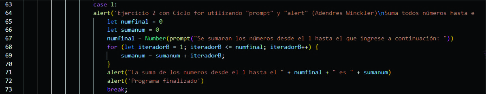
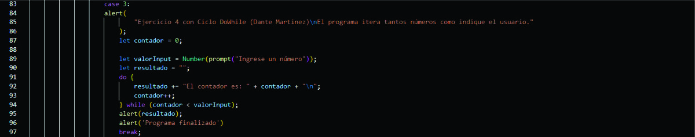
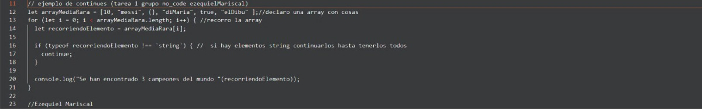
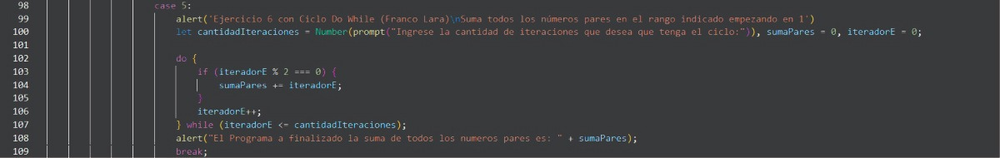

Proyecto Ciclos - Java Script
Grupo No-Code
Ejercicio 1 (Abel Pierna)

Ejercicio 2 (Andres Winckler)
Ejercicio 3 (Dario Carrizo)

Ejercicio 4 (Dante Martinez)
Ejercicio 5 (Ezequiel Mariscal)
Ejercicio 6 (Franco Lara)
Ejercicio 7 (Jeremias Riquero)